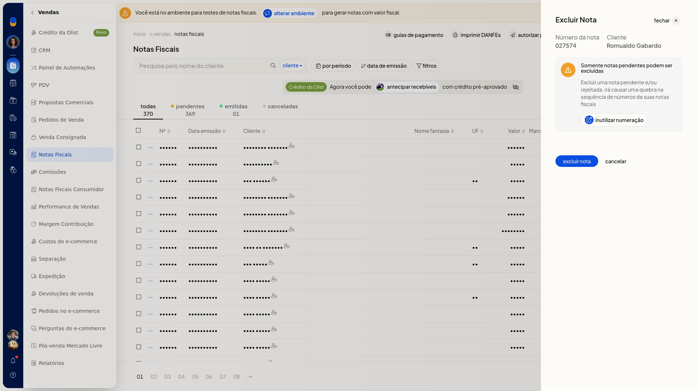

Excluir notas fiscais
Importante
- Só notas pendentes podem ser excluídas.
- Excluir nota pendente ou rejeitada quebra a numeração.
- O diálogo traz um link para inutilizar numeração.
Instruções
-
Acesse Vendas > Notas Fiscais.
-
Na linha da nota pendente, abra o menu de ações e clique em Excluir nota.

-
Clique em excluir nota para confirmar. Para manter a nota, clique em cancelar.